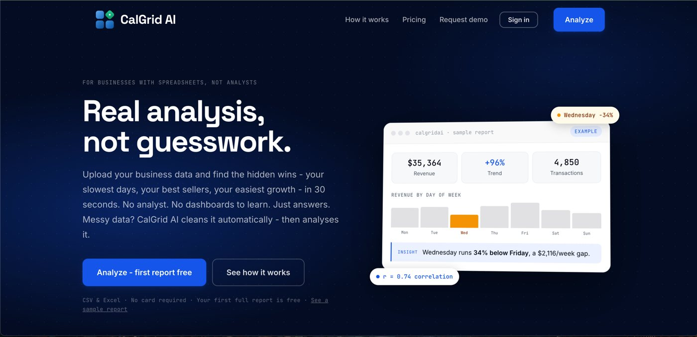

Try my projects in your browser
Each demo runs on real output from the project's code, and the interactive ones use the same scoring logic as the Python version, checked against it. No sign-up, nothing to install.
CalGrid AI
The AI analytics platform I founded and lead. Small businesses upload a spreadsheet and get plain-English insights, forecasts, and cited answers to their questions.
- Live in production at calgridai.com
- "Ask your data" RAG feature: 13 of 13 test questions answered correctly
- Your first full report is free, no card required

Project demos
Retail KPI dashboard
A dbt + DuckDB pipeline turns 59,089 messy rows into a tested star schema. Filter revenue by period and channel, explore cohort retention, and see the data-quality scorecard.
Open dashboardFraud alert-budget simulator
Rules vs. anomaly detection vs. gradient boosting at the same analyst workload. Drag the budget and watch the fraud dollars each one catches.
Open simulatorChurn risk scorer
The model behind the Churn Model API. Change a customer's contract, tenure and services and get the churn risk, the reasons, and the best retention levers.
Score a customerGRC what-if risk report
A NIST CSF 2.0 assessment of a fictional credit union. Implement controls and watch the heat map, risk register and remediation roadmap recalculate.
Run a what-ifLLM security scan report
20 OWASP LLM Top 10 attacks against a vulnerable and a hardened chatbot. See every prompt, every reply, and why the CI gate blocks or passes the release.
View the report